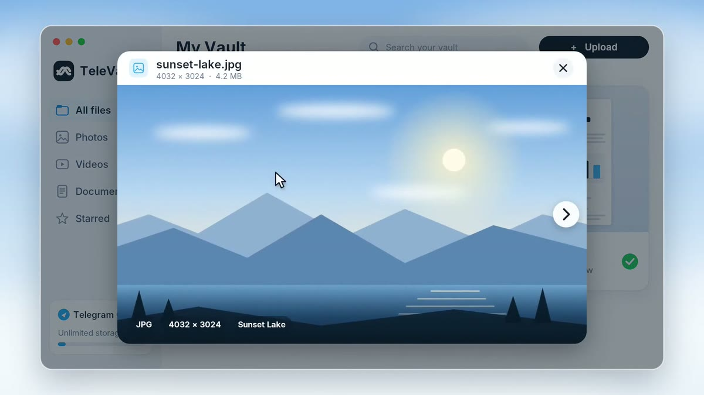
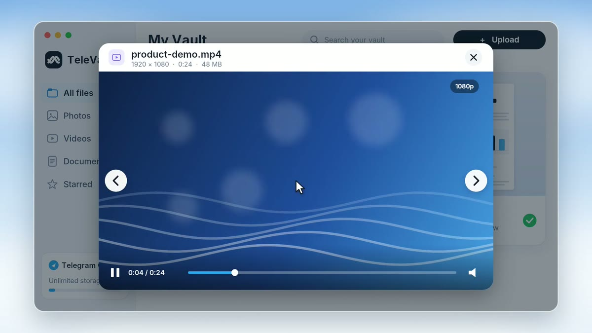
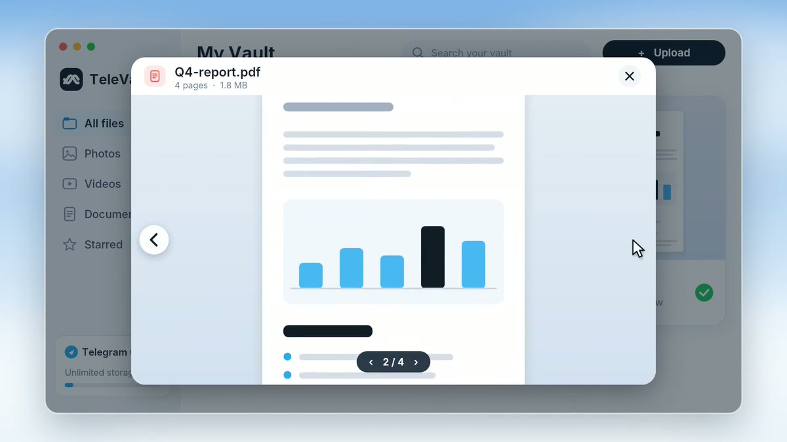
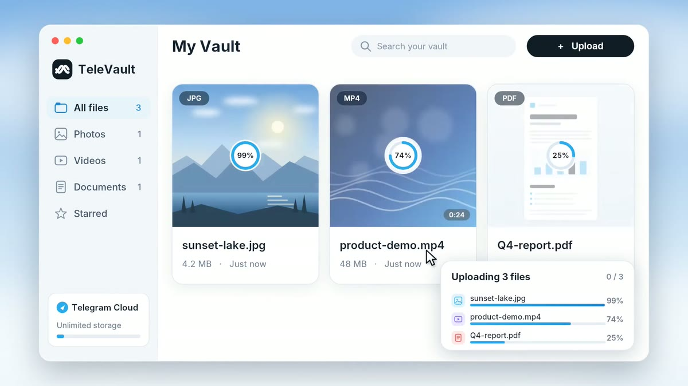

Saved Messages
Built for quick notes, not file management.
- No folders or file tree
- Search across your messages
- No desktop file browser
- Free with your Telegram account
TeleVault gives your Telegram storage a proper desktop file management experience. Organize, search, preview, upload and manage your files from one clean interface .
The problem
Your files are safe in Telegram. They are just scattered across one endless chat, with no folders and no structure.
One stream. Every file type. No folders.
Same files. Folders, search, previews.
Why TeleVault
TeleVault is not a new cloud. It is a better front door to the storage you already have.
Built for quick notes, not file management.
Great structure, separate storage and a bill.
A file manager on top of your Telegram storage.
Features
Four jobs, done properly. Nothing you have to configure before it is useful.
Folders, a sidebar and a file tree that mirror how you already think about your files.

Find a file by name or type without scrolling through a chat history.

Open images, video and documents in place, before you download anything.

Drag files in and they land in your Telegram storage, sorted the way you set them up.

How it works
Connect once, sync, and work with your files like any other folder on your desktop.
Sign in with your own Telegram account. No new account, no separate storage.
TeleVault reads the files already in your Telegram storage and lays them out for you.
Create folders, search, preview and upload without leaving the window.
Security
TeleVault is a client, not a cloud. It does not ask you to trust another place with your files.
Contribute
Read the code, report a bug, or ship a feature. We review every pull request.
Start with an issue labelled good first issue. Small, scoped, reviewed quickly.
Browse issuesPropose it first in an issue, then open a pull request against main.
Request a featureFix a confusing sentence, add a screenshot, or refine the interface.
Read the style guidegit clone https://github.com/hsay123/TGDrive.git
cd TGDrive/televault
cp .env.example .env # add your Telegram API ID and hash
npm install && npm run devNo open good-first issues right now. Open one and tell us what you would build.
FAQ
The things people ask before they try it.
TeleVault is an open-source desktop file manager for your Telegram cloud storage. It gives your files folders, search, previews and drag-and-drop upload in one window.
Yes. TeleVault is free and released under the MIT license. The source is on GitHub, so you can read it, build it and change it.
Yes. TeleVault works with the Telegram account you already have, and your files stay in your own Telegram storage.
In your Telegram account. TeleVault is a client for the storage you already have, not a separate cloud drive.
TeleVault talks to Telegram on your behalf and does not run a server that stores your files. Because it is open source, you can audit exactly what it sends and receives.
TeleVault is a desktop app. Check the releases page on GitHub for the current list of supported platforms and builds.
No. TeleVault is an independent open-source project and is not affiliated with or endorsed by Telegram.
Any limit comes from Telegram and your account, not from TeleVault. The app uses the same limits Telegram applies to your uploads.
Open an issue on the GitHub repository. The bug report and feature request templates ask for the details maintainers need.
Read the contributing guide, pick an open issue labelled good first issue, and open a pull request. Documentation and design contributions are welcome too.
Yes. Clone the repository, install dependencies with npm install, and run the
development command. The contributing guide walks
through the full setup.